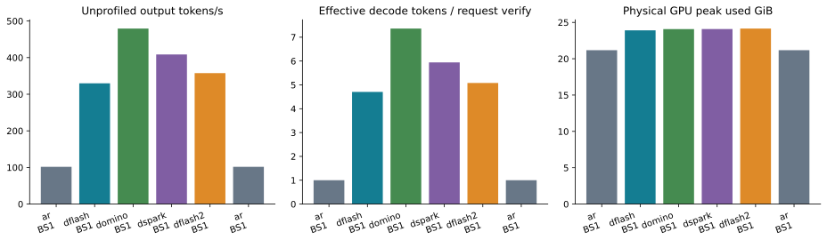
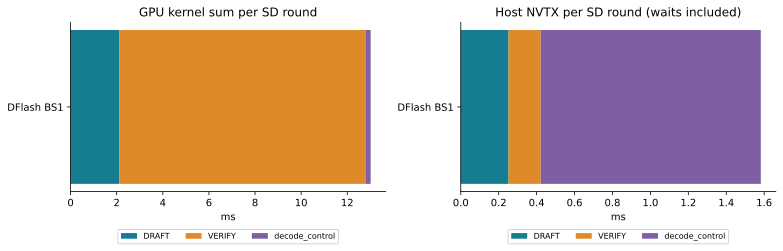

← 报告索引Parallel SD / SGLang：pilot01
RTX 5090 · 原始真实输入 token IDs · BF16 target · FA4 · 同一 SGLang Engine
探索性实验，不是论文 leaderboard。此报告只收录已成功结束的 cell：6/6；campaign 当前状态：success。阶段：pilot。未完成项没有填充数据。
decode CUDA Graph、overlap scheduler 开启；初始 cohort 的 prefill graph 关闭；prefix reuse 关闭。固定输出忽略 EOS，用于隔离资源扩展，不能当作自然停止的应用吞吐。加载、编译、warmup 和 flush-cache 不计入吞吐窗口。
每个 cell 使用相同输入与输出上限，metadata 保存请求时间、返回 token IDs、实际 spec verify 次数和 device memory 采样。AR 前后两次用于检查漂移；speedup 分母是匹配 AR cell median 的中位数。任何 BF16 token 分歧均保留，不据此声称逐 token 一致或已验证答案质量。

有效 decode tokens/verify = (实际输出 tokens − 每请求 prefill seed token) / 请求 verify 次数之和，包含被提交的 bonus。AR 为 1。截断最后一轮会影响它，不能把它当成未截断的模型内生 acceptance。
物理显存来自 NVML 50 ms 采样，不是 PyTorch allocated/reserved。SGLang memory_usage 的 target weight/KV 项与其合并 graph 项不能直接当作完整 draft 权重和 draft KV 的总和。
不同 checkpoint 的训练数据、block size 和推理模块不同，本表是部署组合比较，不是算法单因素消融。SD 方法之间的输出比较另列；初始 pilot 的四个 SD 方法在 8/8 个 prompt 上互相一致。
功能路径证据
pilot01_00_ar_gsm8k_bs1
[2026-11-04 15:13:51] Capture target decode CUDA graph end. bs=[1], elapsed=3.15 s, mem usage=0.04 GB, avail mem=10.73 GB.
[2026-11-04 15:13:55] Decode batch, #running-req: 1, #token: 143, token usage: 0.00, cuda graph: True, gen throughput (token/s): 10.90, #queue-req: 0
[2026-11-04 15:13:56] Decode batch, #running-req: 1, #token: 193, token usage: 0.01, cuda graph: True, gen throughput (token/s): 102.34, #queue-req: 0
[2026-11-04 15:13:56] Decode batch, #running-req: 1, #token: 77, token usage: 0.00, cuda graph: True, gen throughput (token/s): 99.13, #queue-req: 0
[2026-11-04 15:13:57] Decode batch, #running-req: 1, #token: 127, token usage: 0.00, cuda graph: True, gen throughput (token/s): 102.36, #queue-req: 0
[2026-11-04 15:13:57] Decode batch, #running-req: 1, #token: 177, token usage: 0.01, cuda graph: True, gen throughput (token/s): 102.35, #queue-req: 0
[2026-11-04 15:13:58] Decode batch, #running-req: 1, #token: 131, token usage: 0.00, cuda graph: True, gen throughput (token/s): 99.09, #queue-req: 0
[2026-11-04 15:13:58] Decode batch, #running-req: 1, #token: 181, token usage: 0.01, cuda graph: True, gen throughput (token/s): 102.34, #queue-req: 0
[2026-11-04 15:13:59] Decode batch, #running-req: 1, #token: 82, token usage: 0.00, cuda graph: True, gen throughput (token/s): 99.05, #queue-req: 0
[2026-11-04 15:13:59] Decode batch, #running-req: 1, #token: 132, token usage: 0.00, cuda graph: True, gen throughput (token/s): 102.36, #queue-req: 0
[2026-11-04 15:14:00] Decode batch, #running-req: 1, #token: 182, token usage: 0.01, cuda graph: True, gen throughput (token/s): 102.35, #queue-req: 0
[2026-11-04 15:14:00] Decode batch, #running-req: 1, #token: 181, token usage: 0.01, cuda graph: True, gen throughput (token/s): 98.53, #queue-req: 0
[2026-11-04 15:14:01] Decode batch, #running-req: 1, #token: 231, token usage: 0.01, cuda graph: True, gen throughput (token/s): 102.34, #queue-req: 0
[2026-11-04 15:14:01] Decode batch, #running-req: 1, #token: 99, token usage: 0.00, cuda graph: True, gen throughput (token/s): 99.08, #queue-req: 0
[2026-11-04 15:14:02] Decode batch, #running-req: 1, #token: 149, token usage: 0.00, cuda graph: True, gen throughput (token/s): 102.34, #queue-req: 0
[2026-11-04 15:14:02] Decode batch, #running-req: 1, #token: 199, token usage: 0.01, cuda graph: True, gen throughput (token/s): 102.33, #queue-req: 0
[2026-11-04 15:14:03] Decode batch, #running-req: 1, #token: 108, token usage: 0.00, cuda graph: True, gen throughput (token/s): 98.99, #queue-req: 0
[2026-11-04 15:14:03] Decode batch, #running-req: 1, #token: 158, token usage: 0.00, cuda graph: True, gen throughput (token/s): 102.31, #queue-req: 0
[2026-11-04 15:14:04] Decode batch, #running-req: 1, #token: 109, token usage: 0.00, cuda graph: True, gen throughput (token/s): 98.80, #queue-req: 0
[2026-11-04 15:14:04] Decode batch, #running-req: 1, #token: 159, token usage: 0.00, cuda graph: True, gen throughput (token/s): 102.32, #queue-req: 0
[2026-11-04 15:14:05] Decode batch, #running-req: 1, #token: 209, token usage: 0.01, cuda graph: True, gen throughput (token/s): 102.31, #queue-req: 0
[2026-11-04 15:14:05] Decode batch, #running-req: 1, #token: 143, token usage: 0.00, cuda graph: True, gen throughput (token/s): 75.33, #queue-req: 0
[2026-11-04 15:14:06] Decode batch, #running-req: 1, #token: 193, token usage: 0.01, cuda graph: True, gen throughput (token/s): 102.32, #queue-req: 0
[2026-11-04 15:14:06] Decode batch, #running-req: 1, #token: 77, token usage: 0.00, cuda graph: True, gen throughput (token/s): 99.19, #queue-req: 0
[2026-11-04 15:14:07] Decode batch, #running-req: 1, #token: 127, token usage: 0.00, cuda graph: True, gen throughput (token/s): 102.35, #queue-req: 0
[2026-11-04 15:14:07] Decode batch, #running-req: 1, #token: 177, token usage: 0.01, cuda graph: True, gen throughput (token/s): 102.32, #queue-req: 0
[2026-11-04 15:14:08] Decode batch, #running-req: 1, #token: 131, token usage: 0.00, cuda graph: True, gen throughput (token/s): 99.04, #queue-req: 0
[2026-11-04 15:14:08] Decode batch, #running-req: 1, #token: 181, token usage: 0.01, cuda graph: True, gen throughput (token/s): 102.30, #queue-req: 0
[2026-11-04 15:14:09] Decode batch, #running-req: 1, #token: 82, token usage: 0.00, cuda graph: True, gen throughput (token/s): 99.19, #queue-req: 0
[2026-11-04 15:14:09] Decode batch, #running-req: 1, #token: 132, token usage: 0.00, cuda graph: True, gen throughput (token/s): 102.34, #queue-req: 0
[2026-11-04 15:14:10] Decode batch, #running-req: 1, #token: 182, token usage: 0.01, cuda graph: True, gen throughput (token/s): 102.31, #queue-req: 0
[2026-11-04 15:14:10] Decode batch, #running-req: 1, #token: 181, token usage: 0.01, cuda graph: True, gen throughput (token/s): 98.44, #queue-req: 0
[2026-11-04 15:14:11] Decode batch, #running-req: 1, #token: 231, token usage: 0.01, cuda graph: True, gen throughput (token/s): 102.30, #queue-req: 0
[2026-11-04 15:14:11] Decode batch, #running-req: 1, #token: 99, token usage: 0.00, cuda graph: True, gen throughput (token/s): 99.17, #queue-req: 0
[2026-11-04 15:14:12] Decode batch, #running-req: 1, #token: 149, token usage: 0.00, cuda graph: True, gen throughput (token/s): 102.31, #queue-req: 0
[2026-11-04 15:14:12] Decode batch, #running-req: 1, #token: 199, token usage: 0.01, cuda graph: True, gen throughput (token/s): 102.30, #queue-req: 0
[2026-11-04 15:14:13] Decode batch, #running-req: 1, #token: 108, token usage: 0.00, cuda graph: True, gen throughput (token/s): 99.04, #queue-req: 0
[2026-11-04 15:14:13] Decode batch, #running-req: 1, #token: 158, token usage: 0.00, cuda graph: True, gen throughput (token/s): 102.31, #queue-req: 0
[2026-11-04 15:14:14] Decode batch, #running-req: 1, #token: 109, token usage: 0.00, cuda graph: True, gen throughput (token/s): 99.08, #queue-req: 0
[2026-11-04 15:14:14] Decode batch, #running-req: 1, #token: 159, token usage: 0.00, cuda graph: True, gen throughput (token/s): 102.31, #queue-req: 0
[2026-11-04 15:14:15] Decode batch, #running-req: 1, #token: 209, token usage: 0.01, cuda graph: True, gen throughput (token/s): 102.30, #queue-req: 0
pilot01_01_dflash_gsm8k_bs1
[2026-11-04 15:14:30] DFLASH fused KV materialization enabled. n_layers=5, num_kv_heads=8, head_dim=128
[2026-11-04 15:14:32] Capture target verify CUDA graph end. bs=[1], elapsed=1.12 s, mem usage=0.07 GB, avail mem=8.02 GB.
[2026-11-04 15:14:32] DFLASH draft greedy head folded into the draft cuda graph (tp=1).
[2026-11-04 15:14:32] Draft metadata glue graph off: the attention backend declares no host-free draft prep.
[2026-11-04 15:14:33] Capture draft verify CUDA graph end. bs=[1], elapsed=0.57 s, mem usage=0.00 GB, avail mem=8.02 GB.
[2026-11-04 15:14:34] Decode batch, #running-req: 1, #token: 198, token usage: 0.01, accept len: 4.92, accept rate: 0.26, cuda graph: True, gen throughput (token/s): 218.02, #queue-req: 0
[2026-11-04 15:14:34] Decode batch, #running-req: 1, #token: 164, token usage: 0.01, accept len: 4.62, accept rate: 0.24, cuda graph: True, gen throughput (token/s): 336.75, #queue-req: 0
[2026-11-04 15:14:35] Decode batch, #running-req: 1, #token: 154, token usage: 0.00, accept len: 5.10, accept rate: 0.27, cuda graph: True, gen throughput (token/s): 315.30, #queue-req: 0
[2026-11-04 15:14:36] Decode batch, #running-req: 1, #token: 145, token usage: 0.00, accept len: 5.30, accept rate: 0.29, cuda graph: True, gen throughput (token/s): 383.61, #queue-req: 0
[2026-11-04 15:14:37] Decode batch, #running-req: 1, #token: 198, token usage: 0.01, accept len: 4.92, accept rate: 0.26, cuda graph: True, gen throughput (token/s): 250.37, #queue-req: 0
[2026-11-04 15:14:38] Decode batch, #running-req: 1, #token: 164, token usage: 0.01, accept len: 4.62, accept rate: 0.24, cuda graph: True, gen throughput (token/s): 336.96, #queue-req: 0
[2026-11-04 15:14:38] Decode batch, #running-req: 1, #token: 154, token usage: 0.00, accept len: 5.10, accept rate: 0.27, cuda graph: True, gen throughput (token/s): 368.58, #queue-req: 0
[2026-11-04 15:14:39] Decode batch, #running-req: 1, #token: 145, token usage: 0.00, accept len: 5.30, accept rate: 0.29, cuda graph: True, gen throughput (token/s): 385.29, #queue-req: 0
pilot01_02_domino_gsm8k_bs1
[2026-11-04 15:14:55] DFLASH Domino rollout enabled (BF16, TP=1, block-shared candidate pool size=2048).
[2026-11-04 15:14:55] DFLASH fused KV materialization enabled. n_layers=5, num_kv_heads=8, head_dim=128
[2026-11-04 15:14:57] Capture target verify CUDA graph end. bs=[1], elapsed=1.12 s, mem usage=0.05 GB, avail mem=7.92 GB.
[2026-11-04 15:14:57] DFLASH Domino rollout folded into the draft cuda graph (tp=1).
[2026-11-04 15:14:57] Draft metadata glue graph off: the attention backend declares no host-free draft prep.
[2026-11-04 15:14:57] Capture draft verify CUDA graph end. bs=[1], elapsed=0.66 s, mem usage=0.08 GB, avail mem=7.85 GB.
[2026-11-04 15:14:58] Decode batch, #running-req: 1, #token: 211, token usage: 0.01, accept len: 7.48, accept rate: 0.43, cuda graph: True, gen throughput (token/s): 337.94, #queue-req: 0
[2026-11-04 15:14:59] Decode batch, #running-req: 1, #token: 170, token usage: 0.01, accept len: 7.52, accept rate: 0.43, cuda graph: True, gen throughput (token/s): 504.36, #queue-req: 0
[2026-11-04 15:15:01] Decode batch, #running-req: 1, #token: 211, token usage: 0.01, accept len: 7.48, accept rate: 0.43, cuda graph: True, gen throughput (token/s): 268.51, #queue-req: 0
[2026-11-04 15:15:01] Decode batch, #running-req: 1, #token: 170, token usage: 0.01, accept len: 7.52, accept rate: 0.43, cuda graph: True, gen throughput (token/s): 504.30, #queue-req: 0
pilot01_03_dspark_gsm8k_bs1
[2026-11-04 15:15:19] Capture target verify CUDA graph end. bs=[1], elapsed=1.13 s, mem usage=0.07 GB, avail mem=7.95 GB.
[2026-11-04 15:15:19] DSpark draft proposal (sampling) folded into the draft cuda graph.
[2026-11-04 15:15:19] Draft metadata glue graph off: the attention backend declares no host-free draft prep.
[2026-11-04 15:15:20] Capture draft verify CUDA graph end. bs=[1], elapsed=0.60 s, mem usage=0.03 GB, avail mem=7.92 GB.
[2026-11-04 15:15:21] Decode batch, #running-req: 1, #token: 0, token usage: 0.00, accept len: 5.40, accept rate: 0.63, cuda graph: True, gen throughput (token/s): 232.08, #queue-req: 0
[2026-11-04 15:15:21] Decode batch, #running-req: 1, #token: 185, token usage: 0.01, accept len: 6.12, accept rate: 0.73, cuda graph: True, gen throughput (token/s): 424.50, #queue-req: 0
[2026-11-04 15:15:22] Decode batch, #running-req: 1, #token: 183, token usage: 0.01, accept len: 6.92, accept rate: 0.85, cuda graph: True, gen throughput (token/s): 492.00, #queue-req: 0
[2026-11-04 15:15:23] Decode batch, #running-req: 1, #token: 0, token usage: 0.00, accept len: 5.40, accept rate: 0.63, cuda graph: True, gen throughput (token/s): 249.13, #queue-req: 0
[2026-11-04 15:15:24] Decode batch, #running-req: 1, #token: 185, token usage: 0.01, accept len: 6.12, accept rate: 0.73, cuda graph: True, gen throughput (token/s): 424.78, #queue-req: 0
[2026-11-04 15:15:25] Decode batch, #running-req: 1, #token: 183, token usage: 0.01, accept len: 6.92, accept rate: 0.85, cuda graph: True, gen throughput (token/s): 492.09, #queue-req: 0
pilot01_04_dflash2_gsm8k_bs1
[2026-11-04 15:15:41] DFLASH fused KV materialization enabled. n_layers=5, num_kv_heads=8, head_dim=128
[2026-11-04 15:15:43] Capture target verify CUDA graph end. bs=[1], elapsed=1.21 s, mem usage=0.07 GB, avail mem=7.78 GB.
[2026-11-04 15:15:43] DFLASH selector decode folded into the draft cuda graph (sampling_enabled=True).
[2026-11-04 15:15:43] Draft metadata glue graph off: the attention backend declares no host-free draft prep.
[2026-11-04 15:15:44] Capture draft verify CUDA graph end. bs=[1], elapsed=1.36 s, mem usage=0.00 GB, avail mem=7.78 GB.
[2026-11-04 15:15:46] Decode batch, #running-req: 1, #token: 0, token usage: 0.00, accept len: 5.26, accept rate: 0.61, cuda graph: True, gen throughput (token/s): 225.95, #queue-req: 0
[2026-11-04 15:15:46] Decode batch, #running-req: 1, #token: 159, token usage: 0.00, accept len: 5.48, accept rate: 0.64, cuda graph: True, gen throughput (token/s): 382.81, #queue-req: 0
[2026-11-04 15:15:47] Decode batch, #running-req: 1, #token: 214, token usage: 0.01, accept len: 5.10, accept rate: 0.59, cuda graph: True, gen throughput (token/s): 375.82, #queue-req: 0
[2026-11-04 15:15:48] Decode batch, #running-req: 1, #token: 200, token usage: 0.01, accept len: 4.80, accept rate: 0.54, cuda graph: True, gen throughput (token/s): 345.56, #queue-req: 0
[2026-11-04 15:15:49] Decode batch, #running-req: 1, #token: 0, token usage: 0.00, accept len: 5.26, accept rate: 0.61, cuda graph: True, gen throughput (token/s): 337.34, #queue-req: 0
[2026-11-04 15:15:49] Decode batch, #running-req: 1, #token: 159, token usage: 0.00, accept len: 5.48, accept rate: 0.64, cuda graph: True, gen throughput (token/s): 384.43, #queue-req: 0
[2026-11-04 15:15:50] Decode batch, #running-req: 1, #token: 214, token usage: 0.01, accept len: 5.10, accept rate: 0.59, cuda graph: True, gen throughput (token/s): 376.10, #queue-req: 0
[2026-11-04 15:15:51] Decode batch, #running-req: 1, #token: 200, token usage: 0.01, accept len: 4.80, accept rate: 0.54, cuda graph: True, gen throughput (token/s): 346.03, #queue-req: 0
pilot01_05_ar_gsm8k_bs1
[2026-11-04 15:16:09] Capture target decode CUDA graph end. bs=[1], elapsed=1.37 s, mem usage=0.04 GB, avail mem=10.73 GB.
[2026-11-04 15:16:10] Decode batch, #running-req: 1, #token: 143, token usage: 0.00, cuda graph: True, gen throughput (token/s): 44.04, #queue-req: 0
[2026-11-04 15:16:10] Decode batch, #running-req: 1, #token: 193, token usage: 0.01, cuda graph: True, gen throughput (token/s): 102.35, #queue-req: 0
[2026-11-04 15:16:11] Decode batch, #running-req: 1, #token: 77, token usage: 0.00, cuda graph: True, gen throughput (token/s): 99.09, #queue-req: 0
[2026-11-04 15:16:11] Decode batch, #running-req: 1, #token: 127, token usage: 0.00, cuda graph: True, gen throughput (token/s): 102.37, #queue-req: 0
[2026-11-04 15:16:12] Decode batch, #running-req: 1, #token: 177, token usage: 0.01, cuda graph: True, gen throughput (token/s): 102.34, #queue-req: 0
[2026-11-04 15:16:12] Decode batch, #running-req: 1, #token: 131, token usage: 0.00, cuda graph: True, gen throughput (token/s): 99.14, #queue-req: 0
[2026-11-04 15:16:13] Decode batch, #running-req: 1, #token: 181, token usage: 0.01, cuda graph: True, gen throughput (token/s): 102.34, #queue-req: 0
[2026-11-04 15:16:13] Decode batch, #running-req: 1, #token: 82, token usage: 0.00, cuda graph: True, gen throughput (token/s): 99.21, #queue-req: 0
[2026-11-04 15:16:14] Decode batch, #running-req: 1, #token: 132, token usage: 0.00, cuda graph: True, gen throughput (token/s): 102.38, #queue-req: 0
[2026-11-04 15:16:14] Decode batch, #running-req: 1, #token: 182, token usage: 0.01, cuda graph: True, gen throughput (token/s): 102.34, #queue-req: 0
[2026-11-04 15:16:15] Decode batch, #running-req: 1, #token: 181, token usage: 0.01, cuda graph: True, gen throughput (token/s): 98.56, #queue-req: 0
[2026-11-04 15:16:15] Decode batch, #running-req: 1, #token: 231, token usage: 0.01, cuda graph: True, gen throughput (token/s): 102.34, #queue-req: 0
[2026-11-04 15:16:16] Decode batch, #running-req: 1, #token: 99, token usage: 0.00, cuda graph: True, gen throughput (token/s): 98.87, #queue-req: 0
[2026-11-04 15:16:16] Decode batch, #running-req: 1, #token: 149, token usage: 0.00, cuda graph: True, gen throughput (token/s): 102.35, #queue-req: 0
[2026-11-04 15:16:17] Decode batch, #running-req: 1, #token: 199, token usage: 0.01, cuda graph: True, gen throughput (token/s): 102.34, #queue-req: 0
[2026-11-04 15:16:17] Decode batch, #running-req: 1, #token: 108, token usage: 0.00, cuda graph: True, gen throughput (token/s): 99.00, #queue-req: 0
[2026-11-04 15:16:18] Decode batch, #running-req: 1, #token: 158, token usage: 0.00, cuda graph: True, gen throughput (token/s): 102.35, #queue-req: 0
[2026-11-04 15:16:18] Decode batch, #running-req: 1, #token: 109, token usage: 0.00, cuda graph: True, gen throughput (token/s): 99.19, #queue-req: 0
[2026-11-04 15:16:19] Decode batch, #running-req: 1, #token: 159, token usage: 0.00, cuda graph: True, gen throughput (token/s): 102.35, #queue-req: 0
[2026-11-04 15:16:19] Decode batch, #running-req: 1, #token: 209, token usage: 0.01, cuda graph: True, gen throughput (token/s): 102.34, #queue-req: 0
[2026-11-04 15:16:20] Decode batch, #running-req: 1, #token: 143, token usage: 0.00, cuda graph: True, gen throughput (token/s): 75.39, #queue-req: 0
[2026-11-04 15:16:20] Decode batch, #running-req: 1, #token: 193, token usage: 0.01, cuda graph: True, gen throughput (token/s): 102.34, #queue-req: 0
[2026-11-04 15:16:21] Decode batch, #running-req: 1, #token: 77, token usage: 0.00, cuda graph: True, gen throughput (token/s): 99.16, #queue-req: 0
[2026-11-04 15:16:21] Decode batch, #running-req: 1, #token: 127, token usage: 0.00, cuda graph: True, gen throughput (token/s): 102.37, #queue-req: 0
[2026-11-04 15:16:22] Decode batch, #running-req: 1, #token: 177, token usage: 0.01, cuda graph: True, gen throughput (token/s): 102.34, #queue-req: 0
[2026-11-04 15:16:22] Decode batch, #running-req: 1, #token: 131, token usage: 0.00, cuda graph: True, gen throughput (token/s): 99.13, #queue-req: 0
[2026-11-04 15:16:23] Decode batch, #running-req: 1, #token: 181, token usage: 0.01, cuda graph: True, gen throughput (token/s): 102.34, #queue-req: 0
[2026-11-04 15:16:23] Decode batch, #running-req: 1, #token: 82, token usage: 0.00, cuda graph: True, gen throughput (token/s): 99.09, #queue-req: 0
[2026-11-04 15:16:24] Decode batch, #running-req: 1, #token: 132, token usage: 0.00, cuda graph: True, gen throughput (token/s): 102.36, #queue-req: 0
[2026-11-04 15:16:24] Decode batch, #running-req: 1, #token: 182, token usage: 0.01, cuda graph: True, gen throughput (token/s): 102.34, #queue-req: 0
[2026-11-04 15:16:25] Decode batch, #running-req: 1, #token: 181, token usage: 0.01, cuda graph: True, gen throughput (token/s): 98.46, #queue-req: 0
[2026-11-04 15:16:25] Decode batch, #running-req: 1, #token: 231, token usage: 0.01, cuda graph: True, gen throughput (token/s): 102.31, #queue-req: 0
[2026-11-04 15:16:26] Decode batch, #running-req: 1, #token: 99, token usage: 0.00, cuda graph: True, gen throughput (token/s): 99.15, #queue-req: 0
[2026-11-04 15:16:26] Decode batch, #running-req: 1, #token: 149, token usage: 0.00, cuda graph: True, gen throughput (token/s): 102.33, #queue-req: 0
[2026-11-04 15:16:27] Decode batch, #running-req: 1, #token: 199, token usage: 0.01, cuda graph: True, gen throughput (token/s): 102.31, #queue-req: 0
[2026-11-04 15:16:27] Decode batch, #running-req: 1, #token: 108, token usage: 0.00, cuda graph: True, gen throughput (token/s): 98.60, #queue-req: 0
[2026-11-04 15:16:28] Decode batch, #running-req: 1, #token: 158, token usage: 0.00, cuda graph: True, gen throughput (token/s): 102.32, #queue-req: 0
[2026-11-04 15:16:28] Decode batch, #running-req: 1, #token: 109, token usage: 0.00, cuda graph: True, gen throughput (token/s): 99.05, #queue-req: 0
[2026-11-04 15:16:29] Decode batch, #running-req: 1, #token: 159, token usage: 0.00, cuda graph: True, gen throughput (token/s): 102.32, #queue-req: 0
[2026-11-04 15:16:29] Decode batch, #running-req: 1, #token: 209, token usage: 0.01, cuda graph: True, gen throughput (token/s): 102.32, #queue-req: 0
第一份 warmed Nsight：DFlash BS1

单个 GSM8K prompt、cap64、block16，共 16 轮。GPU launch correlation 覆盖 100%，graph launch 32 次，capture 0 次。完整 decode 窗口每轮约 13.21 ms，GPU kernel busy fraction 约 98.5%。
本例的 GPU 空隙很小；高 busy 不等于 compute bound。control 是 model.forward 以外的 scheduler 工作，不能把它全部标为 accept。CPU 与 GPU 图不可相加；本图是 instrumented profile，不能替代上方独立吞吐。
归因 JSON；原始 .nsys-rep 在 ignored profiles/parallel_sd_20261104，约 790 KB。
原始数据与后续工作
CSV · 逐请求 token 比较 · 版本、原始 cell SHA256 与功能日志 · 实验协议
完整矩阵、同宽度、代表性 Nsight、hybrid 与动态 verify 的结果和当前状态见 总报告。本 cohort 未覆盖长上下文与自然 EOS 的应用负载；这些可作为后续扩展。吞吐表仅收录独立、无 profiler 的测量。